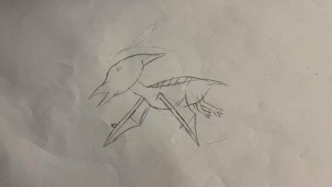
Articulated Pterodactyl
In this report, the process of conceptualising, designing and producing a flapping pterodactyl is documented including what techniques were used and why.

In this report, the process of conceptualising, designing and producing a flapping pterodactyl is documented including what techniques were used and why.
Sporting a two foot wingspan and a one foot height, this artefact is compact but perfect for classroom demonstrations.
A simple string mechanism that can be pulled manually or have a motor attached to.
Designed to help provide a fun experience to children to learn about the Jurassic period. Despite being aimed towards the education sector, this project could also be used as some sort of baby pterodactyl in a movie.
Overview: The process of creating a pterodactyl for educational purposes, specifially for primary school students.
Meet the group:
Taran - Group leader, main designer and modeller
Adriano - Communication manager and risk manager
Ganesh - Primary Researcher for motors
MJ - Scribe for documentation and viability officer
Dami - Primary Researcher for necessary departments and skin materials
Tom - Primary Researcher for 3d printer
Here is a timeline of each stage:

Before beginning, one must look at the overall project, aims and objectives. This involves brainstorming and exploring different concepts and ideas. The brief was to create a robotic artefact with an articulated joint. This can be via the use of motors or hand cranked. With such a broad prompt the first step was to generate ideas. During group meetings, each individual bounced ideas off one another from winged cockroaches to dogs however those ideas seemed too basic. That was until the idea of a pterodactyl popped up. By using the idea of a pterodactyl, it provided several points where articulation could be implemented. These points included: the head, eyes, beak, feet or wings. In addition to this, it provided an opportunity to get creative with the aesthetics such as skin and textures.
A project like this has several use cases especially in the education or entertainment sectors. For instance, an exhibit in a 'dinosaur' theme park or museums. However for this type of project, it was decided to be aimed towards schools especially primary schools.By targeting this towards primary schools, it allows for some leeway regarding accuracy. If this were aimed towards higher education or even museums, it would require a high level of accuracy in which is impossible to achieve. This is due to time constraints and also not a large enough budget. Learning nowadays has become boring and tame leading to poor engagement and in turn academic performance. In order to mitigate this, one method is to employ more hands on learning which engages students through practicals (Thiri, et al., 2024). However, as simple as that sounds, it requires time and resources which can be costly. Not to mention that there is no guarantee that the practical will be enjoyed by the kids. This is where a pterodactyl could be introduced. Children typically adore dinosaurs and while a pterodactyl is technically not a dinosaur, it is a type of reptile under the pterosaurs genus (Osterloff, E. 2020), they are still more likely to enjoy a practical with one.
As this is in a classroom setting, there are going to be even more restrictions and factors to consider. For starters, the actual classroom environment can
provide challenges such as natural sunlight, warm temperatures and even size. As per regulations, classrooms should be equipped with good ventilation and
temperature control. One way to they do this is by installing windows which lets in natural sunlight and helps provide fresh air. This indicates that the
material used to create it should be UV resistant and heat resistant. This could be using certain paints or using different 3d printing filaments. In
addition to that, classrooms are quite small, filled with chairs and tables. Due to the limited space, a life sized pterodactyl would not be able to fit.
Furthermore, it would be distracting which can be disadvantageous to both the teachers and the students. To help reduce the risk of this happening, it
would be best to size down the pterodactyl or hang it from the ceiling.
While its size makes it a great fit for a classroom, it means that it may be difficult to repair and maintain. Small joints and mechanisms are more
finicky and are harder to replace. This means that extra care must be taken when designing the artefact. Accessibility and durability must be considered
to ensure that the lifespan is suitable for long term use. On top of this, a plan must be made for end of service treatment. Nothing lasts forever and this
is an exception. Eventually, the artefact will be too worn down to repair meaning that it needs to be replaced and gotten rid of. End of service treatment
could include being able to recycle parts or getting rid of hazardous materials such as batteries.
Due to its use in a school, it will be around numerous children. Since children have smaller fingers, the likelihood of a child trapping their finger in a
joint is higher. While teachers are going to be monitoring usage and ensuring no one gets to close, teachers are human and can make mistakes. This means
that there should be some kind of safety measure in place to ensure no unwanted fingers get in. This can be as simple as blocking off the mechanism using
an aesthetic skin meaning nothing can get in but that would make maintenance and repairs harder. Unfortunately, many of the methods are like this meaning
a satisfactory balance must be found.
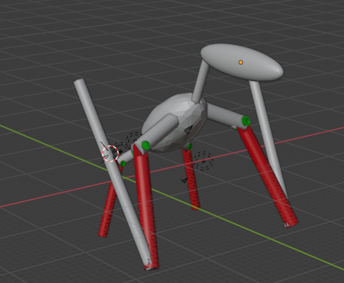
Once an idea was chosen, it was time to design the artefact. First was deciding which part to articulate. Each part had its own merit. By articulating
the beak, it would open up the possibility to creating a talking (or screeching) pterodactyl. However, this would provide little to no benefit to the
students other than scaring them. If the producers wanted to articulate the head they could decide to move it up to down or side to side. There
are many opportunities with this such as making a model that can gesture yes or no to questions or make it move to a beat. However, like with articulating
the beak, there would not be many educational benefits to this. In fact most of these articulations would not be beneficial in a classroom except for one.
Logic dictates that the wings should be the point of articulation. For starters, pterodactyls are known for being the flying 'dinosaur'. Their wings are
their main features and bring the most educational value to the students. For starters, as a creature from a Jurassic era, it would help shed some more light
from that era. Another possibility is that it could serve as a biology lesson as feathered flight and membrane wings have their different advantages. After
this was decided, planning how the wing flapped came next.
When looking at the anatomy of a pterodactyl's wing, there are two different key parts. These parts include the joint under the claw and the one connecting
the 'elbow'. As shown below, these two points act differently. The elbow joint moves up and down to create a flapping motion while the one under the claw
locks while in flight. While articulating the full wing would be possible, it would be best to just choose one of these joints. Not only did this cut down
on the time it took to develop a prototype, it helped simplify and speedline the process. At this point, it could have been interesting to simulate this with
motion capture. However, this would have wasted resources as there it would have just captured someone moving their arm up and down. Plus, a human is not as
accurate as an actual animal wing which would be unethical.
Although this did bring up an issue with having it sit down. As shown in the image above, initial concept idea was to have it move from a sitting position
into its flying one and then flap it's wings. However, after this decision, it was no longer feasible which means that the only choice was the articulate
the elbow joint. This way the pterodactyl's wings still flap but it does not get up. There are several different methods that could be employed. For instance,
a hydraulic type of mechanism could work but this is complex and would take time to develop. The alternative is a pulley method. This method is simpler and a
cheaper which makes it the better design. As shown below, once the red string is pulled, the tension would cause the joint to lock up. Then, when the string
released the arm is dropped simulating a flapping motion.
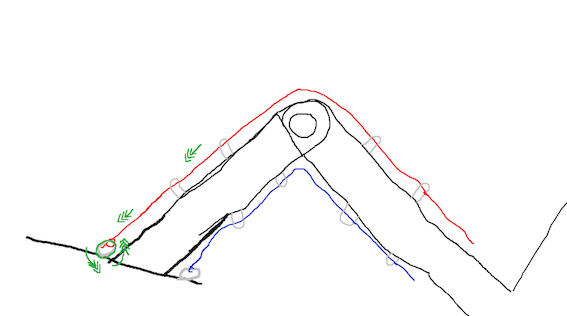
As mentioned in stage one this is to be used in a primary school classroom which means that there are several viable materials. From wood, laser cutting or
woodworking, to different composite materials, each one has its own properties that could make it useful for this use case. It would have been possible to
woodwork the joints could have been viable but in the end 3d printing was chosen. This was because using wood would require equipment like a saw or drill
that access is limited to. If the group wanted to get their own, it would be costly which would not have been worth it. Laser cutting the wood would also not
be a possible solution as it would require piecing together each bit which would take some trial and error especially if a mistake was made.
By combining materials, it is possible to create new ones that have different properties (Blanco, 2020). There are several different viable composite materials
such as ABS, PLA or PETG. Each one has their own properties which would make them usable. For instance, PLA is durable and has good heat resistance
(Ranakoti, et al., 2022). ABS is a tough polymer that is versitile and easy to finish (Protolabs, 2024). However, it is easily affected by sunlight and can become
brittle and discoloured overtime. Out of these three, PETG would be the best option for a number of reasons. It is easier to print than ABS, has a higher impact and
temperature resistance than PLA which is good for a classroom. It also has better layer adhesion which means that each layer printed bonds to the previous
one making it more durable. To address the sunlight issue, PETG is not that effected by UV light which makes it suitable for a classroom.
As pterodactyls are reptiles, their skin is most likely textured and scaly. To get the texture of this, it would have been possible to use the haptic pen. But,
to gain an accurate representation of the scales, the group would have to procure a fragment of lizard skin or something akin to it. This would take money out of
the budget that could go elsewhere. Instead, the idea to use silicone and foam, for difficult to reach areas, was decided. Having silicone for the skin would give
it a more realistic look.
Unlike birds, pterodactyl wings are more like a bat's. A thin membrane stretched from the . This membrane helped provide a large surface area which kept the large
creature airborne (Jagielska, and Brusatte, 2021). There are there options for this: resin, silicone or fabric. Resin is off the table. This is due to the fact that
the resin would be brittle and more likely to crack. Fabric on the other hand would be a good solution. Spandex is stretchy and can handle the movement but on its own
the pterodactyl would not be aesthetically pleasing. To help counteract this, silicone can applied to help with realism as it can be tinted.
When applying the skin and membrane, it is important to think about accessibility for maintenance and repairs. To make it easier to access, gaps could be included at
certain points. This can be done with magnets or adhesive at certain parts. In doing so, there is a slight safety risk due to exposed parts but without it repairs and
maintenance becomes near to impossible.
In addition to a concept sketch and materials, a risk assessment was also drafted. This risk assessment covers all the hazards that can occurring during the creation of the pterodactyl. As shown, there are several hazards that can occur during production such as eye strain and back pain. From the start of the printing process to the cooling, there are many risks with 3d printing. However, the risks are fairly easy to mitigate and the risk is worth the reward.
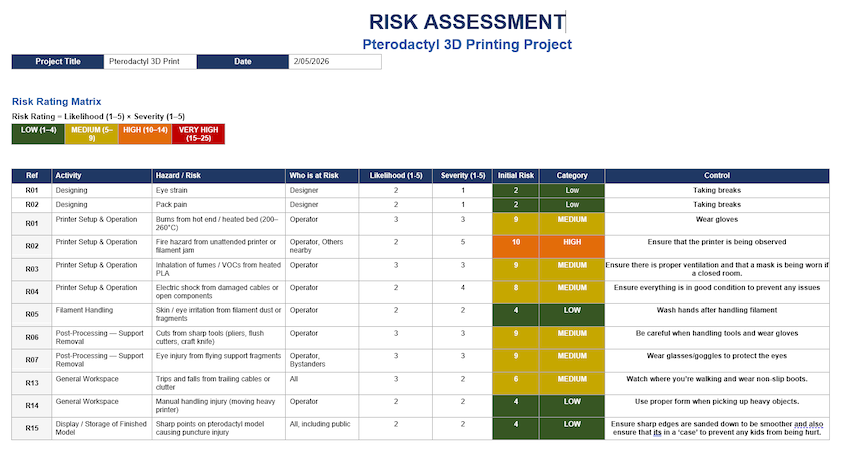
Once the initial design was finished, it was time to use software like Fusion 360 and/or Blender to 3d model the actual joint. Fusion 360 is a CAD (computer
aided design) that is great for a creating individual parts while Blender (open source 3d modelling software) is better for modelling entire systems. For
this project it was better to model it using blender. This is due to the decision to do print in place. Print in place is where the mechanism is printed
in one go. By using this method, it cut out the assembly time. Although, print in place does have its issues. For example, if something something goes wrong
and the print is unusable, that is a lot of wasted material. In addition to that the modeller has to ensure that the gaps are wide enough otherwise the material would
fuse together.
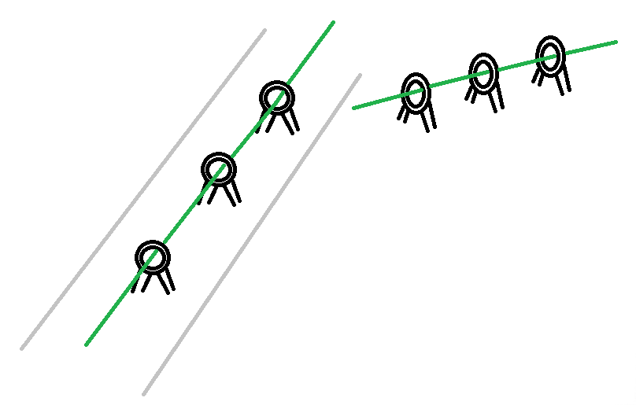
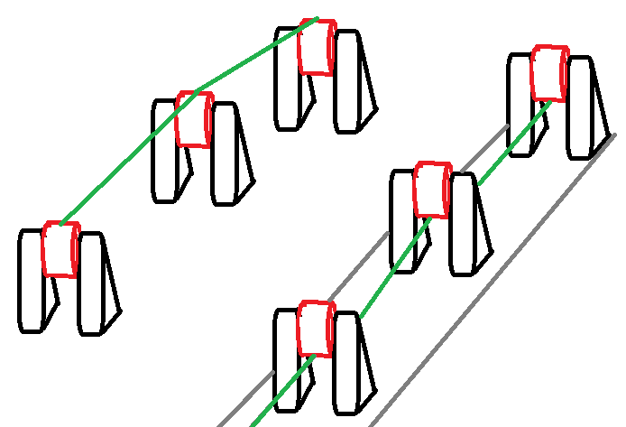
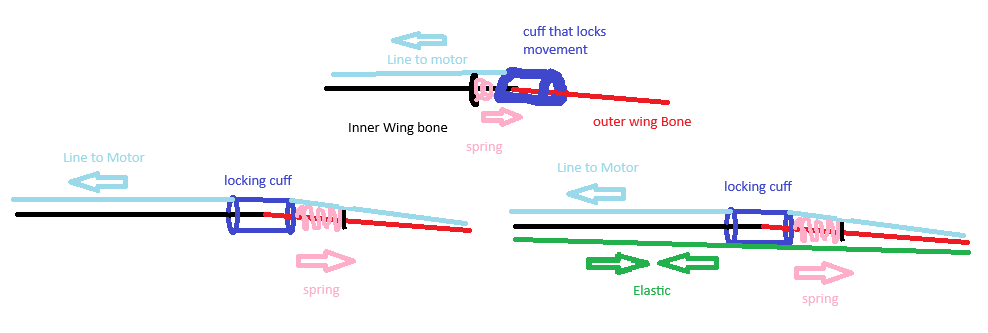
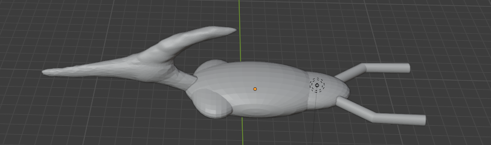
Not only was the mechanism modelled, so was the actual body. As shown above, the body is not that detailed but there are still a few issues. For starters, the feet could be more detailed instead of stumps. The body itself should have a mechanism to hold the wings. Not to mention that since it is lying flat, it needs some sort of stand so that it is not just hitting the floor. Before moving on to creating a physical prototype all of these problems needed to be addressed and a fix needed to be solved.
After some time, the model was refined. Not only are their joints to hold the wings but there is now also a hole on the bottom of the body to fit the stand. This stand should be able to lift and hold the body high enough so that the wings do not hit the ground. Additionally, the body is hollow to ensure it is lighter.
Before a prototype of the mechanism could be printed, a few changes needed to be made to both the mechanism and the body. After consulting experts, it was advised that the rollers have more support as it would most likely melt into itself. Furthermore, the side needed to be lengthened to simulate the longer bone. Once that was done and approved, appropriate supports were added using ultimaker. The supports were placed in between the hole of the hinge and inside the gaps with the rollers. This was to reduce the risk of something going wrong during the print. Once that was confirmed, it was printed.

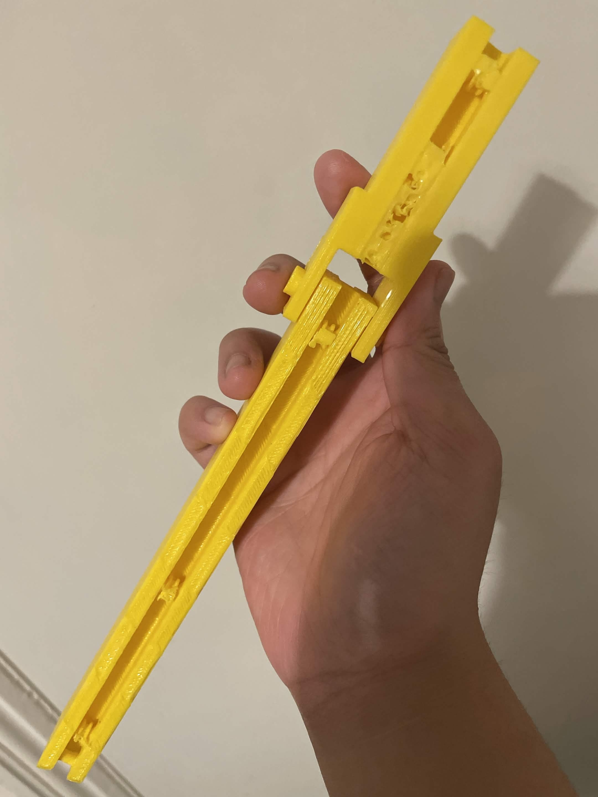
As shown from the pictures above, the prototype looks okay until you look at the bottom. At the bottom, there are bits of the support that were fused into the actual joint
which is less than ideal. To fix this, the supports need to be more angled. Furthermore, the wheels did not spin as intended. This was likely due to the material being fused
to the actual joint. In addition to this, it was printed using PLA rather than PETG. While PLA is good for prototypes, it was established that the final product was going to
be printed using PETG. However, as this was a prototype, it was best to choose the cheaper option because if it worked with PLA, it should work with PETG.
The joint was not the only physical prototype of this artefact. In addition to the joint, a body and head was also printed out. However, due to fortunate circumstances, this
was able to be printed using PETG. Moreover, the body was smaller than the prototype wing as it was produced with a smaller printer. This meant that in addition to the body,
new wings had to be also be printed so it would fit. Since the model would not work without it, the stand was also printed off.
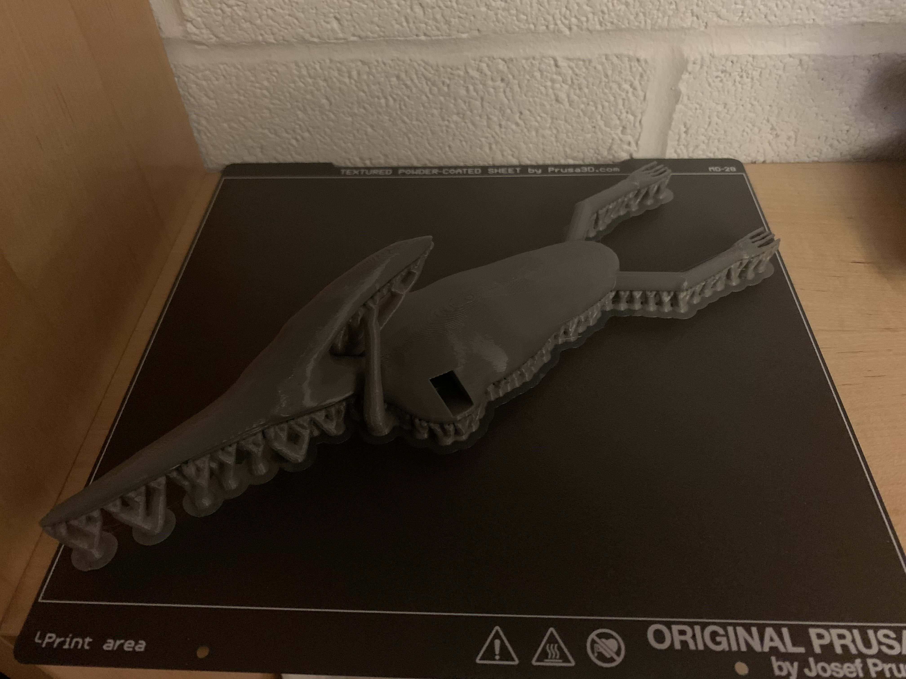
In the end, both a virtual and physical production of the artefact was achieved and while it strayed a little from the original objective, it still satisfied the brief due to the articulation of the wings. Not only that but it was fairly cheap to create. Overall, it only £22.10. Despite not being used the cost of the spandex and adhesive used for it was also calculated in the cost as a what if. To be able to continue production of these, the testing plan should be completed. In addition to this, rather than having it be a manual joint, a motor along with a microcontroller could be attached to the end to fully automate the pulling of the joint. While this would make it safer, it would also increase the cost of the production. Overall, this project was a success but there are still several things to change. For example, the wheels on the wings still do not spin meaning it will wear down faster and maybe the stand could be made of something sturdier.
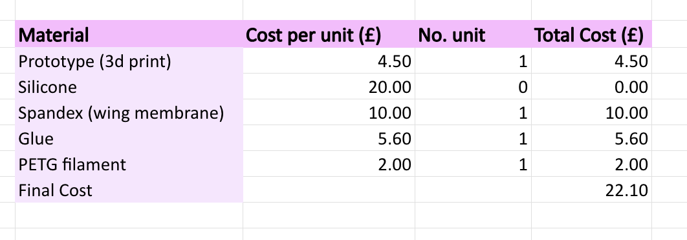